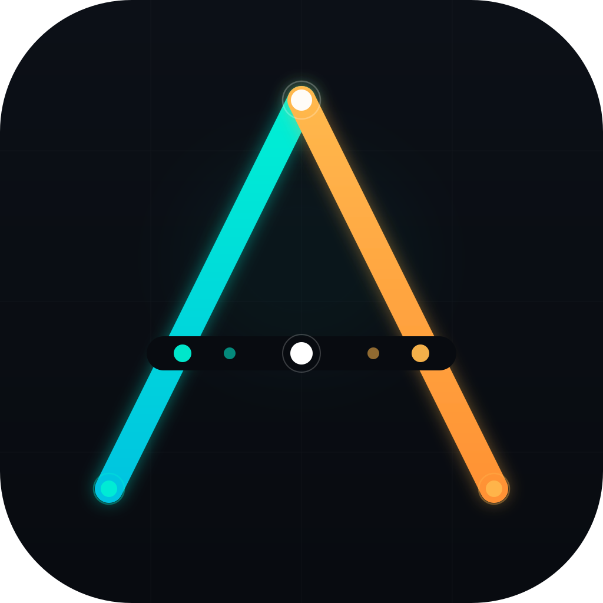

amux
Run dozens of Claude Code agents unattended.
Python 3 + tmux. No build step, no external services.
$ git clone https://github.com/mixpeek/amux && cd amux && ./install.sh $ amux register api --dir ~/Dev/api --yolo && amux start api $ amux serve # → https://localhost:8822
- Self-healing watchdog — compacts, recovers from corruption, unblocks stuck sessions
- Truly headless YOLO — detects and auto-answers tool-approval prompts
- Agent coordination —
$AMUX_URLinjected at startup; agents discover peers and claim tasks - Atomic task claiming — SQLite CAS, no Redis, no duplicates
- Dashboard + PWA — live output, kanban board, workspace. Phone-ready via Tailscale.
- One Python file — ~12k lines, self-restarts on save. Just
python3+tmux.